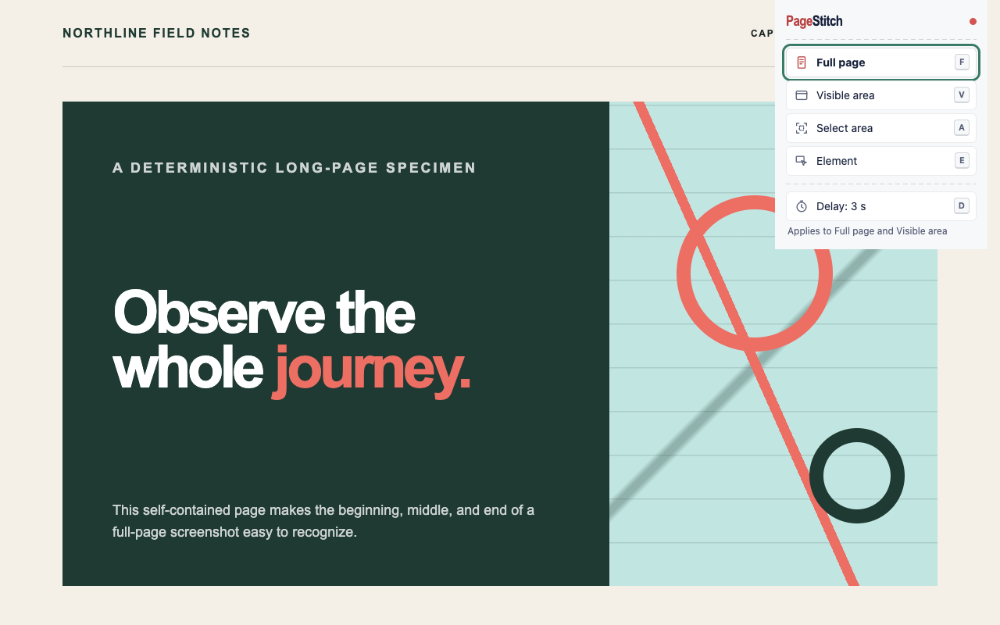

Four ways
Capture part of a page in Chrome with PageStitch
Open the PageStitch menu with its toolbar button or Alt+Shift+S (Option+Shift+S on macOS). Each row has a key, so you can choose without the mouse:
Full page (F or Enter)The entire page, scrolled and stitched into one PNG.
Visible area (V)One screenshot of what is on screen now, at the current scroll position. The page is not scrolled.
Select area (A)Drag a rectangle over the part you want.
Element (E)Point at one part of the page, such as a card, table, or image, and capture just that.
Delay (D)Cycles Off, 3 seconds, and 10 seconds before a full-page or visible-area capture.
Visible area
Screenshot what you see: press V
- 01
Scroll to the part of the page you want.
- 02
Open the menu and press V (or choose Visible area).
- 03
The result tab opens with a screenshot of the visible screen. Fixed and sticky elements appear as you see them.
Select area
Screenshot a selected area: press A
- 01
Open the menu and press A. The page dims and the pointer becomes a crosshair with a live size label.
- 02
Drag a rectangle over the part you want. The mouse wheel scrolls, and the page scrolls by itself when you drag near the edge of the screen, so you can select an area taller than the window.
- 03
Release the mouse to capture. A selection smaller than 8 by 8 pixels is ignored, and Esc cancels.
The downloaded file name gets _area after the time.
Element
Screenshot one element: press E
- 01
Open the menu and press E.
- 02
Move the pointer over the page. The element under it is outlined, with a label showing its tag and size. The mouse wheel scrolls.
- 03
Press ↑ to select the parent element or ↓ to go back to the child.
- 04
Click, or press Enter, to capture. Esc cancels.
The whole page and its body are never offered as an element; use Full page for that. The file name gets _element after the time. The selection overlay runs only on the page you chose and reads only the position, size, and tag name of what is under the pointer; it keeps nothing.
Delay
Wait 3 or 10 seconds first: press D
Press D in the menu to cycle Off, 3 s, and 10 s, then choose Full page or Visible area. The toolbar badge counts down 3, 2, 1 and nothing is drawn on the page, so a dropdown or tooltip you opened stays open. PageStitch remembers your choice. Switching to another tab during the countdown cancels it. Delay does not apply to Select area or Element.
Afterwards
Edit, download, or copy
Every mode opens the same local result tab, which says Captured visible area, Captured selected area, or Captured element. Download PNG, Copy image, save a PDF, or open the free editor to crop, annotate, and blur. Nothing is uploaded: there is no account, analytics, or remote code.

Clear boundaries
Where it does not work
Protected pagesChrome system pages, the Chrome Web Store, other extension pages, and non-HTTP(S) URLs cannot be captured; the menu says so and disables the modes.
Keep the tab activeSwitching tabs, reloading, or navigating during a selection ends it quietly and restores the page.
Good to know
Common questions
Is capturing an area or element free?
Yes. All capture modes, the editor, and PDF export are free in PageStitch, with no account.
Can I change the shortcut?
Yes, at chrome://extensions/shortcuts. Press Enter in the menu for a full page.
Keep reading